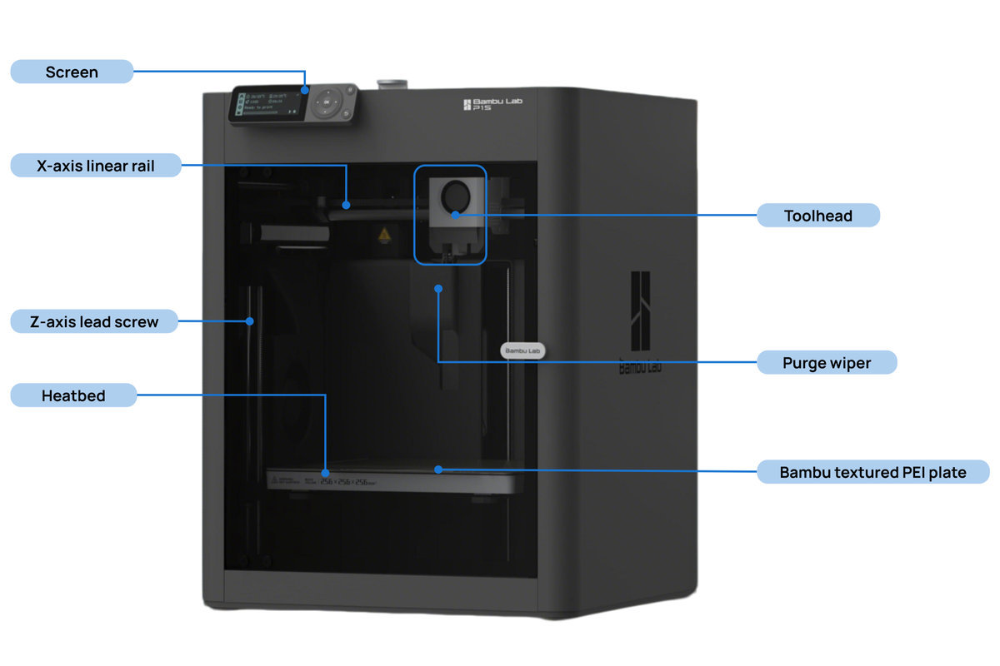
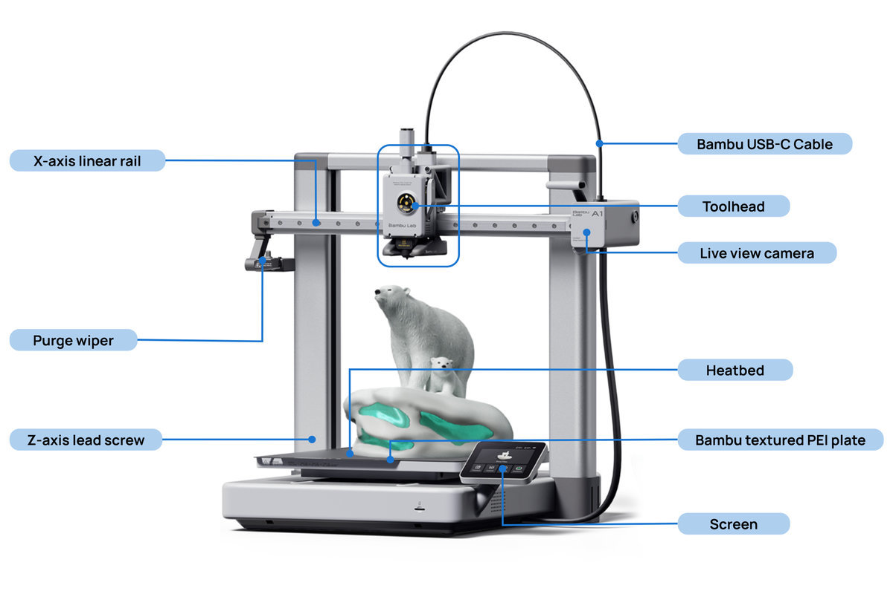
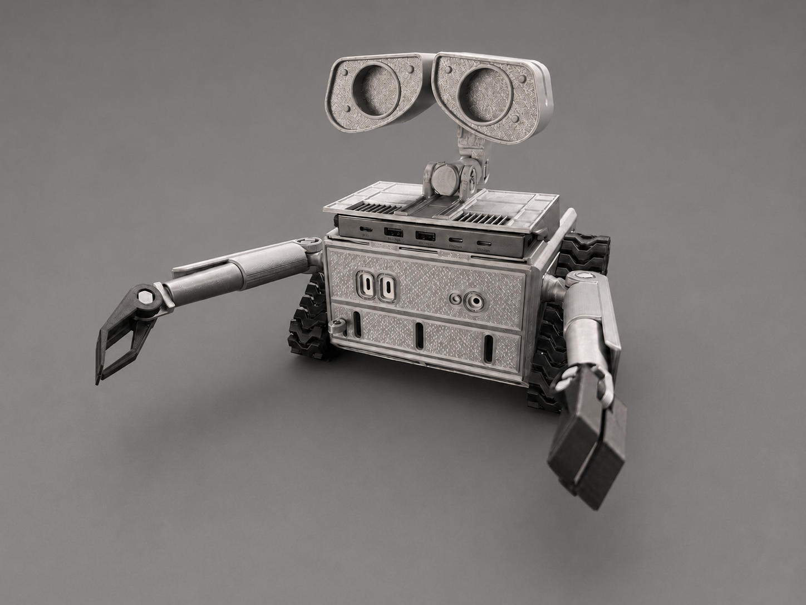
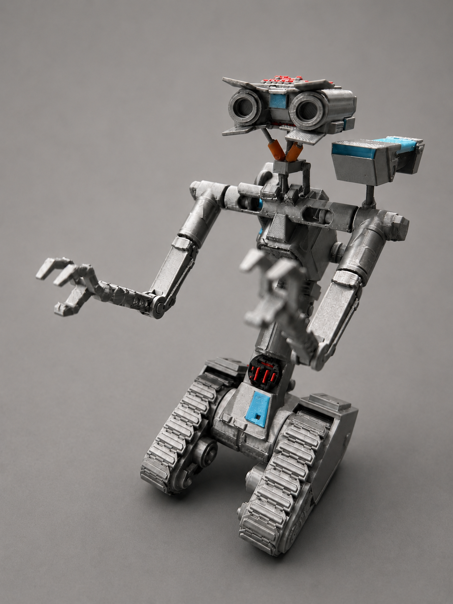
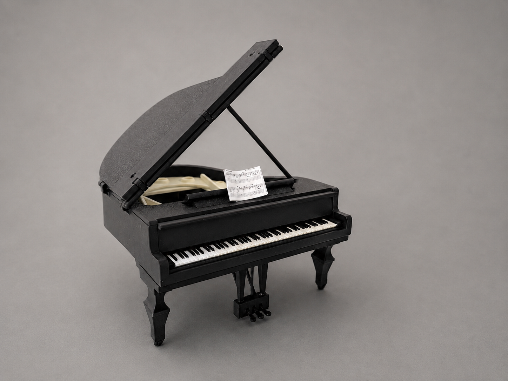

Meine 3D-Drucker
Auf meiner Webseite zeige ich Projekte und Erfahrungen mit dem Bambu Lab P1S und dem Bambu Lab A1.
Bambu Lab P1S

Produktmerkmale
- Schneller Aufbau in 15 Minuten: Vom Auspacken bis zum ersten Druck in nur 15 Minuten.
- Vollständig geschlossenes Gehäuse: Drucken Sie mit technischen Filamenten sicher und konsistent.
- Mehrfarbige Vielseitigkeit: Entfesseln Sie grenzenlose Kreativität mit AMS-gesteuertem Multimaterial-Druck.
- Zuverlässigkeit auf Profi-Niveau: Bewährte Leistung und hohe Betriebszeiten, vertraut von professionellen Druckfarmen.
- Großes Druckvolumen: Ein großzügiger Bauraum von 256 × 256 × 256 mm³ für Ihre anspruchsvollen Projekte.
- Der AMS 2 Pro ist mit Druckern der X1/P1-Serie für den Mehrmaterialdruck kompatibel
Der Bambu Lab P1S ist ein schneller CoreXY-3D-Drucker mit geschlossenem Gehäuse.
Er eignet sich für PLA, PETG und ABS.
Technische Daten als PDFBambu Lab A1

Produktmerkmale
- Vollautomatische Kalibrierung: Kein manuelles Einstellen erforderlich.
- Nahtloser Mehrfarbdruck: Erleben Sie grenzenlose Kreativität mit AMS-gesteuertem Materialhandling.
- Leiser Betrieb mit 49 dB: Drucken Sie in Ruhe, so leise wie in einer Bibliothek.
- Erstklassige Druckqualität: Professionelle Präzision und Oberflächen, die den Branchenstandard setzen.
- MakerWorld-Integration mit einem Klick: Finden Sie Ihr nächstes Projekt und beginnen Sie sofort.
- Großes Druckvolumen: Ein großzügiger Bauraum von 256 × 256 × 256 mm³ für Ihre kreativen Ideen.
- Das verbesserte Heizbettkabel verfügt über eine Kevlar-Verstärkung, eine dickere Isolierung, weicheres Kupfer, ein optimierter Drahtwicklungsintervall, eine Nylonummantelung und eine erweiterte Zugentlastung.
- Um den A1 Drucker an das AMS/AMS 2 Pro/AMS HT anzuschließen, ist ein AMS-Hub (SA013) als Zubehör erforderlich.
Der Bambu Lab A1 ist ein moderner und leiser 3D-Drucker mit automatischer Kalibrierung.
Er eignet sich besonders gut für PLA und PETG.
Technische Daten als PDFMeine Projekte

E-Wally
Material: PLA
Druckzeit: 8 Stunden
E-Wally ist ein detailreicher 3D-gedruckter Roboter, der vom bekannten Filmcharakter WALL-E inspiriert wurde. Das Modell besteht aus zahlreichen Einzelteilen, die mit dem Bambu Lab P1S aus grauem PLA-Filament gefertigt wurden. Nach dem Druck wurden die Bauteile sorgfältig montiert. Besonders auffällig sind die beweglichen Arme, der drehbare Kopf sowie die Kettenlaufwerke. Das Projekt zeigt die Möglichkeiten des 3D-Drucks bei der Herstellung komplexer Modelle mit vielen Einzelkomponenten.

Nr.5 lebt
Material: PLA
Druckzeit: 10 Stunden
Nr.5 lebt ist ein detailreicher 3D-Druck des bekannten Roboters aus dem Film „Nummer 5 lebt“. Das Modell wurde mit dem Bambu Lab P1S aus grauem PLA-Filament hergestellt und besteht aus mehreren Einzelteilen, die nach dem Druck zusammengebaut wurden. Besonders auffällig sind die beweglichen Arme, die charakteristischen Kameraaugen, die Kettenlaufwerke sowie die farbigen Akzente in Blau und Rot. Die Druckzeit betrug etwa 10 Stunden. Dieses Projekt zeigt, wie sich komplexe Filmfiguren mit moderner 3D-Drucktechnik detailgetreu nachbilden lassen.

Mini Flügel
Material: PLA Matte
Druckzeit: 6 Stunden
Der Mini Flügel ist ein detailreiches 3D-Druck-Projekt, das einen klassischen Konzertflügel im Miniaturformat darstellt. Das Modell wurde mit dem Bambu Lab P1S aus schwarzem PLA Matte gedruckt und besteht aus mehreren präzise gefertigten Einzelteilen. Besondere Merkmale sind der aufklappbare Flügeldeckel, die detaillierte Klaviatur, die Pedale sowie das kleine Notenblatt. Die Druckzeit betrug etwa 6 Stunden. Dieses Projekt zeigt die hohe Detailgenauigkeit moderner 3D-Druckverfahren und die Möglichkeit, auch filigrane Objekte realitätsnah nachzubilden.
Meine Filament-Auswahl
Tipps und Tricks
Automatisches Anordnen
Bauteile automatisch optimal auf der Druckplatte platzieren.
Wenn du mehrere Teile auf einer Druckplatte platzierst, nutze das „Auto-Arrange“-Symbol.
- Bauteile werden automatisch angeordnet
- Platz wird optimal genutzt
- Weniger Fehldrucke durch Kollisionen
- Schnelleres Vorbereiten der Druckplatte
Druckbett reinigen
Tipps für perfekte Haftung der ersten Schicht.
Für die perfekte Haftung der ersten Schicht ist eine saubere Druckplatte entscheidend.
Die beste Methode
- Warmes Wasser verwenden
- Parfümfreies Spülmittel nutzen
- Mit weichem Schwamm reinigen
- Mit Küchenpapier trocknen
IPA Reinigung
- Mindestens 91 % IPA verwenden
- Mit Mikrofasertuch reinigen
Wichtige Warnungen
- Kein Aceton auf PEI-Platten
- Keine Stahlschwämme verwenden
3D-Effekt Bauplatte
Tipps für perfekte Hologramm- und Carbon-Effekte.
Um das Maximum aus der 3D-Effekt-Bauplatte (z.B. Bambu Lab Spectrum oder Carbon-Optik) für deinen P1S herauszuholen, kommt es besonders auf die Wahl der ersten Schicht (First Layer) und die Vorbereitung an.
1. Slicer-Einstellungen anpassen
- Platte wählen: Stelle im Bambu Studio das Druckbett auf Smooth PEI Plate oder High Temp Plate um.
- Muster für den ersten Layer: Nutze Hilbert-Kurve statt Standardlinien.
- Linienbreite erhöhen: Zum Beispiel 0,5 mm bei einer 0,4-mm-Düse.
2. Druckbett-Temperatur
- Verwende für Standard-PLA eine Betttemperatur von 60 °C bis 65 °C.
3. Pflege und Reinigung
- Vor jedem Druck gründlich mit Isopropanol reinigen oder gelegentlich mit warmem Wasser und Spülmittel abspülen.
- Keine Klebestifte oder Trennsprays verwenden.
4. Drucke richtig entfernen
- Modell erst entfernen, wenn die Druckplatte vollständig abgekühlt ist.
- Magnetische Stahlplatte leicht biegen statt mit einem Spachtel kratzen.
5. Drucker-Einstellungen
- Bei Effektplatten ohne RFID im P1S-Menü die Erkennung der Bauplattenposition deaktivieren.
Einfache Modifikatoren
Mehr Kontrolle über Stabilität und Design.
Mit Modifikatoren kannst du bestimmte Bereiche eines Modells individuell anpassen.
- Mehr Infill in wichtigen Bereichen
- Texte oder Logos hinzufügen
- Einzelne Bereiche stabiler machen
- Druckzeit gezielt optimieren